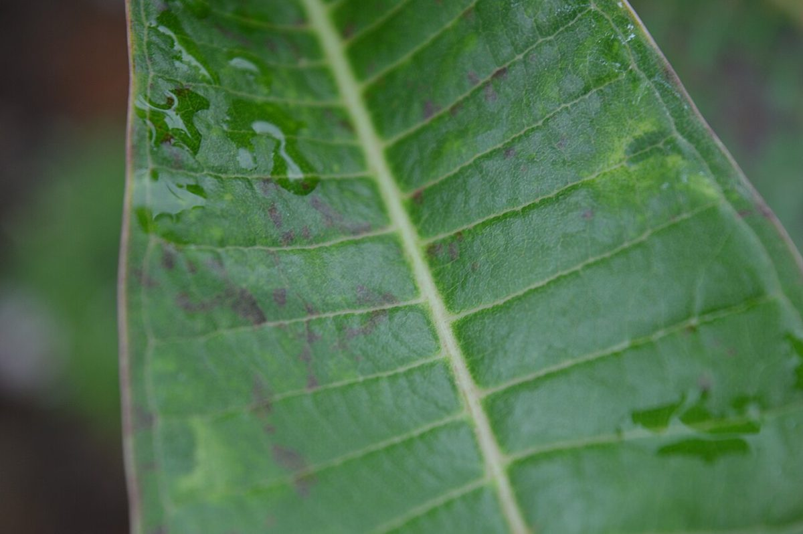

あめあがり
bagel＆cafe 香川県さぬき市志度

制作側の連想
水たまりの逆さ空
「あめあがり」という屋号から、制作側は雨のあとの水たまりに映る、逆さの空を連想しました。ベーグルの真ん中の穴は、水面に広がる波紋の輪に重なります。そこでこのサイトは、写真の下に水たまりへの映り込みを敷き、見出しも水面に映した作りにしています。これは制作側の連想で、お店の理念・由来とは無関係です。
降る・止む・晴れる
三つの水面
写真はお店や地域のものではなく、国外または撮影地不明のフリー素材です。
- 降る

葉の上の水滴(撮影地不明のイメージ) - 止む
水面の波紋(撮影地不明のイメージ) - 晴れる

夕方の雲(国外のイメージ)

窓辺
窓の向こう
お店の中の様子は、まだ分かっていません。ここにあるのは、雨上がりの窓の向こうをイメージした写真です。実際の店内写真は、ご提供いただいたものに差し替えます。
ご案内
お店のこと(確認できたものだけ)
| 所在地 | 〒769-2101 香川県さぬき市志度975 |
|---|---|
| 電話 | なし |
| 営業時間 | 準備中 |
| 定休日 | 準備中 |
| ご予約 | 準備中 |
| 駐車場 | 準備中 |
| SNS | Instagram @bagelcafe.ameagari |